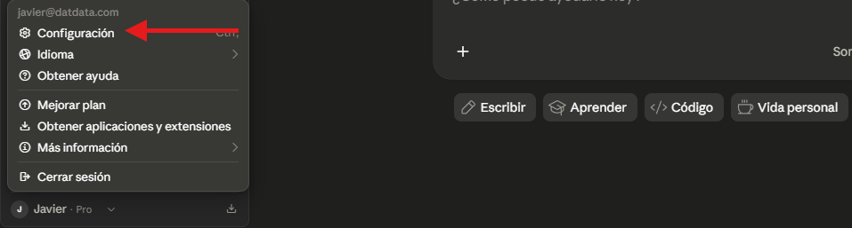

¿Qué permite esta integración?
El protocolo MCP (Model Context Protocol) actúa como un puente directo entre el chat estándar de Claude Desktop y tu archivo abierto en Power BI Desktop. En lugar de escribir código a mano o copiar y pegar, Claude se conecta localmente a tu modelo para crear tablas, medidas DAX y establecer relaciones de forma automática.
"Con tu informe abierto, le dices a Claude desde el chat: Vamos a empezar un nuevo Dashboard usando una metodología en el archivo que tengo abierto de PowerBI, así que, conéctate a el."
Claude recibe la instrucción y se conecta automáticamente al archivo de PowerBI
"Con tu informe abierto ya con las tablas de datos insertadas, le dices a Claude desde el chat: Crea una medida DAX que calcule una tendencia mostrando el crecimiento real de tickets por mes."
Claude recibe la instrucción, lee el esquema de tus tablas actuales en Power BI y resuelve directamente en tu modelo sin que tengas que tocar el editor avanzado.
Prerrequisitos de software
Para establecer este puente de comunicación, necesitaremos instalar dos programas base. Las instalaciones pueden hacerse con las opciones por defecto.
Claude Desktop
Descarga la aplicación nativa de escritorio desde la página oficial de Anthropic. Nota importante: Aunque la versión gratuita funciona, es sumamente recomendable utilizar la versión de pago (Claude Pro), ya que la versión gratuita tiene límites de créditos estrictos que se consumirán rápidamente al enviarle esquemas completos de bases de datos a la IA.
Visual Studio Code (VS Code)
Descarga el editor de código gratuito de Microsoft. Ojo: No vamos a programar en VS Code ni le daremos instrucciones desde allí. Solo lo utilizaremos como vehículo para instalar la extensión del servidor MCP en nuestra computadora.
Instalación y extracción del Servidor MCP
Instalar la extensión en VS Code
Abre Visual Studio Code y dirígete al panel izquierdo en el ícono de Extensiones (o presiona Ctrl+Shift+X).
En el buscador escribe MCP. Busca la extensión Power BI Modeling MCP y asegúrate de que el proveedor oficial sea Microsoft. Haz clic en instalar. Una vez que termine, puedes cerrar VS Code completamente.

Extraer la ruta del servidor
Abre tu explorador de archivos en Windows. En la barra superior de búsqueda, escribe exactamente lo siguiente y presiona Enter:
%userprofile%

Navega a través de las siguientes carpetas:
- Abre la carpeta
.vscode - Entra a
extensions - Busca la carpeta de la extensión instalada (suele llamarse
analysis-services.powerbi-modeling-mcp...) - Entra a
server
Allí encontrarás un archivo ejecutable llamado PowerBI_Modeling_MCP (o un nombre similar dependiendo de la versión). Haz clic derecho sobre él y selecciona la opción "Copiar como ruta de acceso".
Configuración en Claude Desktop
Ahora le indicaremos a Claude dónde se encuentra este servidor para que pueda ejecutarlo y conectarse a Power BI.
Abrir el archivo de Ajustes
Abre Claude Desktop. Ve a tu perfil en la esquina superior y selecciona el menú de Configuración.
En el panel izquierdo, baja hasta la sección que dice Desarrollador. Haz clic en el botón para editar la configuración de MCP. Esto abrirá un archivo claude_desktop_config.json en tu Bloc de Notas.



Inyectar el código y formatear la ruta
Reemplaza el contenido del Bloc de Notas con la structure base del MCP de Power BI, pero deberás pegar la ruta que copiaste en el paso anterior en la propiedad "command". Tu archivo debería quedar similar a esto:
{
"mcpServers": {
"powerbi-modeling-mcp": {
"command": "C:\\Users\\TuUsuario\\.vscode\\extensions\\analysis-services.powerbi-modeling-mcp-0.4.0-win32-x64\\server\\PowerBI_Modeling_MCP.exe",
"args": ["--start"],
"env": {}
}
}
}
\). Para que el archivo JSON sea válido, debes presionar Ctrl+H en el Bloc de Notas y reemplazar todas las barras simples (\) por barras dobles (\\). Guarda los cambios en el archivo y ciérralo.
Reiniciar y Validar
Es indispensable reiniciar la aplicación de Claude. No basta con cerrar la ventana. Ve a la barra de tareas de Windows (cerca del reloj), haz clic derecho en el ícono de Claude y selecciona Salir.
Vuelve a abrir Claude Desktop, entra de nuevo a Configuración > Desarrollador y revisa el estatus. Debería indicar que el servidor MCP se ha conectado y está corriendo exitosamente.
Skills Instalables para Claude
Las siguientes skills pueden instalarse en Claude para automatizar partes específicas de esta metodología.
| Skill | Descripción |
|---|---|
| powerbi-dashboard-builder | Skill principal. Orquesta las etapas 1-5. Conecta al modelo abierto via MCP automáticamente. |
| deneb-chart-generator | Genera specs de Vega-Lite para Deneb a partir de una descripción o imagen de referencia. |
| html-kpi-cards | Construye medidas DAX de tipo HTML Content para tarjetas KPI y badges de estado. |
| powerbi-dax-auditor | Audita el modelo en busca de problemas (blanks, medidas huérfanas) y propone correcciones. |
Cómo instalar las skills:
Ir a la configuración de Claude
Abre la aplicación de Claude Desktop y dirígete al menú principal. Haz clic en la opción Customize (Personalizar).
Crear nuevas habilidades
Dentro del menú Customize, selecciona la opción Crear nuevas habilidades (Create new skills).
Desplegar menú de creación
En el panel izquierdo, haz clic en el ícono de más (+) que se encuentra junto a la barra de búsqueda de Habilidades. Luego, selecciona Crear habilidad (Create skill).
Subir la habilidad
En el menú desplegable, selecciona la opción Subir una habilidad (Upload a skill).
Cargar el archivo
Se abrirá una ventana. Aquí deberás arrastrar y soltar o hacer clic para cargar los archivos correspondientes a las *skills* (.md, .zip o .skill). Repite el proceso para cada una de las 4 skills.

Tecnologías de apoyo
Power BI MCP
Conexión directa al modelo semántico abierto. Claude puede leer tablas, medidas, relaciones y crear/modificar medidas DAX sin intervención manual.
Deneb (Vega-Lite)
Motor de visualización declarativa que permite gráficas imposibles con visuals nativos: degradados, anotaciones condicionales, microcharts, layouts custom.
HTML Content
Tarjetas KPI, tablas con formato avanzado e iconografía dinámica construidas con HTML/CSS puro, reactivas al contexto de filtro de Power BI.
Las 7 Etapas del Flujo de Trabajo
El flujo está dividido en 7 etapas. Las etapas 1-5 son colaborativas (Claude + Analista). Las etapas 6-7 son del Analista con Claude en modo soporte.
Ingesta y diagnóstico de datos
Claude realiza un análisis automático antes de cualquier construcción. Revisa tipos de columnas, nulos, duplicados y outliers. Identifica dimensiones candidatas y hechos. Por último, señala problemas de calidad que deben resolverse antes de modelar.
Intención del dashboard
Esta es la etapa más importante del flujo. Lo que el analista declare como objetivo del dashboard es mandatorio. Claude acata la intención y construye todo en función de ella.
Diseño del modelo semántico
El modelo se diseña para servir los KPIs mandatorios de la Etapa 2. Claude se conecta al modelo abierto en Power BI Desktop para confirmar que el esquema coincide con lo diseñado y detectar particiones sin datos.
Construcción de medidas DAX
Claude escribe y sube las medidas directamente al modelo abierto via MCP. Las medidas se construyen en el orden dictado por la intención declarada en Etapa 2.
Diseño de visuales y estilo
El diseño sigue una jerarquía clara: primero la intención del analista, luego el criterio de Claude.
Layout y publicación
Esta etapa queda a cargo del analista. Claude entrega una guía de layout específica para el dashboard construido, no genérica.
Revisión y correcciones
Una vez que el analista tiene el dashboard armado en el canvas, Claude queda en modo de soporte activo para correcciones.
Checklist de Sesión
Usar este checklist al iniciar cada nuevo proyecto de dashboard:
- Datos recibidos: CSV, Excel o conexión directa a BD disponible.
- Power BI Desktop abierto: Archivo.pbix abierto para conexión MCP.
- Intención del dashboard declarada: El analista definió el objetivo principal y los KPIs mandatorios.
- Referencia de diseño (opcional): Captura, paleta o descripción de estilo. Si no se da, Claude decide.
- Audiencia del dashboard: ¿Quién lo usa? ¿Con qué frecuencia?.
- Fuente de datos confirmada: Ruta local o conexión a servidor validada.
- Granularidad temporal definida: ¿Diario, semanal, mensual?.
- Fechas del período de análisis: Rango histórico disponible.
- Etapa 7 activada (si aplica): El analista puede pedir correcciones en cualquier momento después del layout.